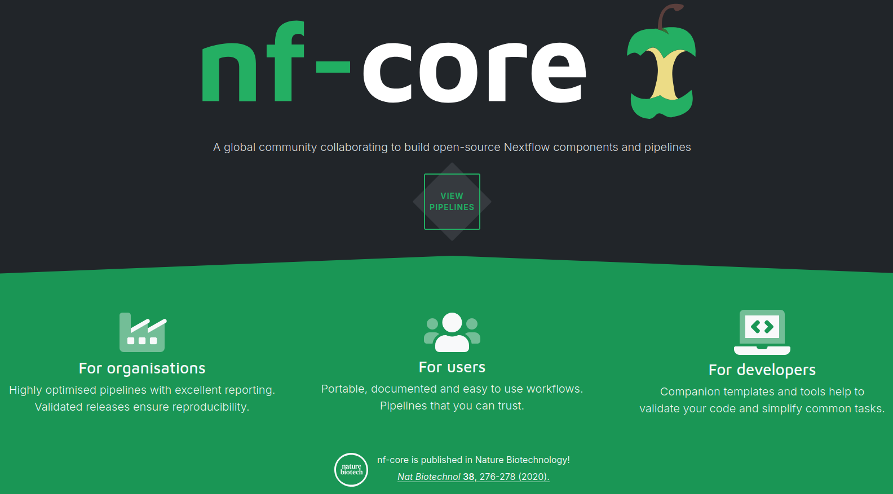

High-Performance Computing: CCMAR’s CETA & National Infrastructure
January 21, 2025
This hands-on workshop introduces participants to the power of high-performance computing (HPC), guiding them toward independent use through practical examples on the CCMAR’s CETA server. The workshop also includes a presentation from HPCVLAB at UAlg on the national Deucalion FCCN infrastructure.
Outline
- Hands on SLURM cases on
CETA- Basics of editing files on HPC in
Vim - Hello world example submitting a python script
- Create custom database and run
BLAST - Nextflow pipelines from
nf-core
- Basics of editing files on HPC in
- Presentation introducing
Deucalion, a national FCCN HPC infrastructure, access schemes, support and Graphical interfacesCETAdoes not provide.
- Please get yourself familiar with the spirit of working on command line from last years Andrzej’s introducion
- To get an account on
CETA, you need to send your request, together with your public ssh key to cymon[at].ualg.pt.
Below are the OS dependent instructions on how to setup the ssh including the ssh-keygen.
ssh should be already installed by default. If not, install it via your package manager such as:
# linux
sudo apt install openssh-client
# mac
brew install opensshIf unsure whether you have OpenSSH available, go to
Settings → System → Optional Features- Check if
OpenSSHis installed. If not, select Add a feature, then find and install both OpenSSH Client and Server. - Confirm
OpenSSHis listed in System and Optional Features.
Open a command line or power shell and execute. To generate the key, execute
ssh-keygen -t rsa -b 4096 -C "yourname@ceta"Two files will be created in your /home/.ssh/ directory (on Windows in users/<name>/.ssh). The file named <key>.pub is the public key and is copied to the server to identify you. The file named <key> (without an extension) is your private key; it must be kept secret and never shared with anyone.
Files necessary to complete this tutorial can be found and downloaded from the biohap GitHub.
Once you have your account confirmed, you will be able to login using
ssh <username>@ceta.ualg.ptIf you set up a password to access the private key during its generation step, you will be promted to enter it. Otherwise press enter.
In the .ssh folder you can create/edit a config file
Host ceta
HostName ceta.ualg.pt
User <your-ceta-user-name>
IdentityFile ~/.ssh/<your-ceta-key-filanme>With such setup, you can login using only ssh ceta, your username and server address will get substituted from the config file information.
If you need to access CETA from another PC in the future, generate a new private/public key pair and add the public key to .ssh/authorized_keys file.
There is no graphical interface available on the server. Typically prepare all your files on your local machine and scp them over to the server. Small edits are performed in vi/vim editor
Vim
create a new file (as touch command would as well) or open an existing one
vim <file>Default mode is a command mode. To enter editing mode, press insert or Shift i
to exit the edit mode, press ESC. In the this normal mode, pressing combination of letters execute commands
dd→ delete a line your cursor is atyy→ yank (copy) the current linep→ paste after the cursorP→ paste before the cursor:%d→ to delete everythingu→ undo the last change
and so on and on
To copy text in editing mode (shift I), select text and right-click to paste at the position of the cursor
To save and exit: ESC to enter command mode :wq (write and quit)
To exit without saving: ESC and :q!
In this section, the hello-world example on submitting a job for exeution is shown. First copy two files over to CETA using scp. In your PC command line, navigate to the folder containing these files:
- add_2_to_2.py
- HPC_addition.sh
# if you create folder in your /home/<name>/
mkdir hpc_workshop
# to copy files to that location is done as
scp add_2_to_2.py HPC_addition.sh <your-ceta-username>@ceta.ualg.pt:/home/<name>/hpc_workshop/
# you can replace /home/<name> with ~
scp add_2_to_2.py HPC_addition.sh <your-ceta-username>@ceta.ualg.pt:~/hpc_workshop/To copy folders use scp -r, which means you can copy the whole material with
scp -r HPCcourse <your-ceta-username>@ceta.ualg.pt:/home/hpc_workshop/vim each file and pay attention to these #SBATCH lines
#SBATCH --job-name=adding_2_and_2
#SBATCH --output=addition.log
#SBATCH --error=addition.err
#SBATCH --nodes=1
##SBATCH --ntasks-per-node=1
#SBATCH --cpus-per-task=48
#SBATCH --partition=all
#SBATCH --nodelist=ceta1
#SBATCH --mem=80GFirst three lines are to set up how the job appears in the queue and where it wirtes outputs. CETA nodes have 56 CPUs, you allocate total of ntasks-per-node x cpus-per-task
Memory is allowcated for the whole job. Nodes 1-5 have 200 GB of memory, bigmem node has 900 GB RAM, which is not useful for most of the jobs. Even if your database has 500 GB, it does not mean it gets all loaded into the RAM, most probably you do not need to run on bigmem.
#SBATCH --partition=all means that the job is submitted to all nodes, if there is free compute it will run immediately. This option is overwritten by #SBATCH --nodelist=ceta1 where we pick specific node for submission. If the resources are not available on ceta1, the job will wait in the queue until the resources are freed.
If you wish to pick a node, check the current job queue with:
squeue
JOBID PARTITION NAME USER ST TIME NODES NODELIST(REASON)
12575 all UDI305 cymon R 1-03:41:34 1 ceta4
12578 all many-aa- leonor R 1-18:03:38 1 ceta5
12592 all saniau bruno R 19:49:24 1 ceta1
12593 all nano1 jvarela R 17:04:09 1 ceta1
12609 all nfcoreMa jbentes R 40:12 1 ceta3
12499 bigmem UDI299 cymon R 9:00:25 1 ceta-genUnlike running the script directly in bash with ./HPC_addition.sh, which needs
chmod +x HPC_addition.sh, SLURM script does not require executable +x, if you have #!/bin/bash at the top of the script:
To run the job:
sbatch HPC_addition.shTo cancel a job (do not worry, you can cancel only your own jobs)
# for example scancel 12543
scancel <job number> Execution of this job depends on the queu and resources which are currently used for the jobs. In the setup above, next to our job can run another job on the same node using #SBATCH --cpus-per-task=6 and #SBATCH --mem=100G. Do you agree?
let’s investigate the output files, compare
ls
# or
ls -lhrt
# or
ls -la
# or
llRule of thumbs are:
- Do not store large BLAST databases in your home directory. Home directories usually have strict size and performance limits. Large reference databases should be placed in shared or high-performance storage locations provided by the HPC system. On
CETAin/share/data/ncbi-blast/. - Database size directly affects performance. The larger the database, the slower the search. If your analysis does not require certain taxa (e.g. vertebrates), use a filtered or custom database to reduce runtime and resource usage.
- Ask HPC support staff for guidance. Asking early often saves significant time and compute resources by choosing the right sources, and optimizeing SLURM scripts.
- More CPUs do not always mean faster BLAST. BLAST performance is often limited by disk I/O and database size rather than CPU. Increasing the number of threads beyond a certain point may yield little or no speedup and can waste allocated resources.
BLAST is a sequence alignment tool used to identify similarities between query sequences (nucleotide or protein, -query) and sequences stored in a reference database (-db). It performs local alignments, allowing for mismatches, insertions, and deletions, and reports the best-scoring matches along with alignment statistics such as scores, identities, and E-values.
Start by copying a small_SILVA.txt to your workshop folder as before, which is set of sequences we want to represent as a database compatible with the blast. First we setup a database with makeblastdb. This software comes with the blast as a tool and should be installed for you already (it is possible to install your own software in your account home folder but it is a bit tricky)
makeblastdb -dbtype nucl -in small_SILVA.txt -out small_SILVA.dbNew submission script
Let’s prepare slurm input file to run local BLAST. First let’s use the previous template
cp HPC_addition.sh run_blast.shvim run_blast.shChanges
- Instead of python command, replace it with
blastn -db small_SILVA.db -query SRR12031251_300bp.fasta -max_target_seqs 1 -outfmt 6 > my_blast_results.txtBlast is not parallelized, unless you ask for more threads with
--num-threads, therefore you can ask for a single CPU,--cpus-per-task=1, than 54 user can run their blasts on the same node.Change the job name, log and error files names to appropriatelly describe your job!!! Do squeue, if the node is busy avoid using it, or remove the
#SBATCH --nodelist=ceta1. In normal bash,#is a comment symbol, in a batch script to uncomment the#BATCH, use##instead.
The blast job should take less than 1min to finish
Just as an example for your reference of more complicated version, below we want to blast all fasta files in the directory with filenames ending with .merged.fasta against two separate databases (VFDB_setA_nt.fa and megares_database_v3.00.fasta). Doing this one by one is not efficient because of little gain on using many CPUs for single blasts, therefore we keep running MAX_JOBS archives in parallel.
Slurm script can look like this with logs being written to blastn_%j.out:
#!/bin/bash
#SBATCH --partition=all
#SBATCH --nodes=1
#SBATCH --ntasks-per-node=1
#SBATCH --cpus-per-task=54
#SBATCH --job-name=blastn
#SBATCH --output=blastn_%j.out
#SBATCH --error=blastn_%j.err
WORD_SIZE=28
EVALUE=1e-5
# Input directory with FASTA files (example)
INDIR="/home/davidp/archives"
# Output directory
OUTDIR="results/blastn-ws${WORD_SIZE}-$(date +%Y%m%d_%H%M%S)"
mkdir -p "${OUTDIR}"
MAX_JOBS=6
current_jobs=0
for FASTA in ${INDIR}/*/*.merged.fasta; do
ARCHIVE=$(basename "$(dirname "$FASTA")")
echo "Processing ${ARCHIVE}"
(
start_time=$(date +%s)
blastn \
-query "${FASTA}" \
-db VFDB_setA/VFDB_setA_nt.fas \
-outfmt "6 qseqid pident length mismatch gapopen qstart qend sstart send evalue bitscore" \
-max_target_seqs 10 -max_hsps 1 \
-evalue ${EVALUE} -word_size ${WORD_SIZE} \
-num_threads 4 \
-out "${OUTDIR}/${ARCHIVE}_merged_vfdb-setA.out" &
blastn \
-query "${FASTA}" \
-db megares_v3_DB/megares_database_v3.00.fasta \
-outfmt "6 qseqid pident length mismatch gapopen qstart qend sstart send evalue bitscore" \
-max_target_seqs 10 -max_hsps 1 \
-evalue ${EVALUE} -word_size ${WORD_SIZE} \
-num_threads 4 \
-out "${OUTDIR}/${ARCHIVE}_merged_megares_v3.out" &
wait
end_time=$(date +%s)
echo "Completed ${ARCHIVE} in $((end_time - start_time)) seconds"
) &
current_jobs=$((current_jobs + 1))
if [ "$current_jobs" -ge "$MAX_JOBS" ]; then
wait -n
current_jobs=$((current_jobs - 1))
fi
done
wait
echo "All BLAST jobs completed."In the above example the user, which is not optimal. Better way is to submit all jobs as an array
#!/bin/bash
INDIR="/home/davidp/archives"
FILELIST="blast_inputs.txt"
# Build input list
find "$INDIR" -type f -name "*.merged.fasta" | sort > "$FILELIST"
N=$(wc -l < "$FILELIST")
echo "Submitting $N BLAST jobs as a SLURM array"
sbatch \
--array=1-"$N" \
blast_array_job.sh "$FILELIST", where SLURM triggers the worker blast_array_job.sh per archive. The worker script looks then something like this
#!/bin/bash
#SBATCH --partition=all
#SBATCH --nodes=1
#SBATCH --ntasks=1
#SBATCH --cpus-per-task=8
#SBATCH --job-name=blastn
#SBATCH --output=blastn_%A_%a.out
#SBATCH --error=blastn_%A_%a.err
set -euo pipefail
WORD_SIZE=28
EVALUE=1e-5
FILELIST="$1"
FASTA=$(sed -n "${SLURM_ARRAY_TASK_ID}p" "$FILELIST")
ARCHIVE=$(basename "$(dirname "$FASTA")")
OUTDIR="results/blastn-ws${WORD_SIZE}"
mkdir -p "$OUTDIR"
echo "[$(date)] Processing $ARCHIVE"
echo "FASTA: $FASTA"
echo "CPUs allocated: $SLURM_CPUS_PER_TASK"
start_time=$(date +%s)
# Use all CPUs SLURM gives us, split between BLASTs
THREADS_PER_BLAST=$((SLURM_CPUS_PER_TASK / 2))
blastn \
-query "$FASTA" \
-db VFDB_setA/VFDB_setA_nt.fas \
-outfmt "6 qseqid pident length mismatch gapopen qstart qend sstart send evalue bitscore" \
-max_target_seqs 10 -max_hsps 1 \
-evalue "$EVALUE" -word_size "$WORD_SIZE" \
-num_threads "$THREADS_PER_BLAST" \
-out "$OUTDIR/${ARCHIVE}_merged_vfdb-setA.out" &
blastn \
-query "$FASTA" \
-db megares_v3_DB/megares_database_v3.00.fasta \
-outfmt "6 qseqid pident length mismatch gapopen qstart qend sstart send evalue bitscore" \
-max_target_seqs 10 -max_hsps 1 \
-evalue "$EVALUE" -word_size "$WORD_SIZE" \
-num_threads "$THREADS_PER_BLAST" \
-out "$OUTDIR/${ARCHIVE}_merged_megares_v3.out" &
wait
end_time=$(date +%s)
echo "[$(date)] Completed $ARCHIVE in $((end_time - start_time)) seconds"- each FASTA is isolated
- failures don’t affect others
- clean logs per archive
- SLURM enforces CPU limits
- scalable to thousands of inputs.

Browse the 141 pipelines that are currently available as part of nf-core. Why it is a good idea to use them:
- Reproducibility: You start with the raw data, and get all the preprocessing and processsing channeled into single workflow.
- Integration: Many tools setup in the containers to use out of the box, which might be hard to setup individually.
- Reporting: Supports comprehensive logs and result reports. If pipeline fails, it can be often salvaged from the cached intermediate state adding
-resumeto the script and rerun.
You might easily generate lots of outputs. Use
nextflow clean [run_name|session_id] [options]after succesful pipeline completion.
Installation
Normally, you will not need, nor have permissions to install system-wide nextflow on the cluster. For you own account or PC, you will need java > 17, if needed follow these instructions
Then do the following
# Install nextflow
curl -s https://get.nextflow.io | bash
mv nextflow ~/bin/Typically nf-core pipeline will run in the container, such as apptainer or docker, for HPC. Different pipelines need different inputs however general structure of calling the pipeline is:
# Launch the pipeline
nextflow run nf-core/<PIPELINE-NAME> -v <XXX> \
--input samplesheet.csv \
--output ./results/ \
-profile apptainerIt is highly recommended to test the pipeline first, before the full run, which is done by adding test to the profile parameter, resulting in -profile test,apptainer
Under the hood, if you are using the pipeline for the first time, it will get pulled from GH into your ~/.nextflow folder
In the full example, we set up kraken2 database and will run a taxprofiler pipeline for the same sample as the blast before.
Two kraken databases already exists on CETA in /home/share/kraken/, so that everybody can use them.
Can you tell me what is the size of those DBs?
Taxprofiler needs minimal input files which are samples sheet and database sheet to point where your sequence files and databases you want run against are, respectively.
For sample, we will reuse the blast file, copy the following into a new ‘samplesheet_biohap.csv’, careful it needs to be gzipped file
gzip SRR12031251_300bp.fasta
touch samplesheet_biohap.csv
vi samplesheet_biohap.csv
# copy the full path to your SRR12031251_300bp.fasta
sample,run_accession,instrument_platform,fastq_1,fastq_2,fasta
sample1,0,ILLUMINA,,,<rest-of-the-full-path>/SRR12031251_300bp.fasta.gz,, save and close with :wq.
For the database we use the smaller minusb, copy the below to the databases_input.csv:
tool,db_name,db_params,db_path
kraken2,minusb,,/share/data/kraken/k2_minusb_20250714.tar.gz#!/bin/bash
#SBATCH --partition=all
#SBATCH --nodelist=ceta2
#SBATCH --nodes=1
#SBATCH --ntasks-per-node=1
#SBATCH --cpus-per-task=4
#SBATCH --job-name=taxprof
#SBATCH --output=nfcore-taxprof_%j.out
#SBATCH --error=nfcore-taxprof_%j.err
# this is HPC setup dependent
export JAVA_HOME=/usr/lib/jvm/java-17-openjdk-17.0.17.0.10-1.el8.x86_64
export NXF_APPTAINER_CACHEDIR=/share/apps/share/nextflow/apptainer_cache
# Set output directory
OUTDIR="results/nfcore-taxprofiler-$(date +%Y%m%d_%H%M%S)"
SAMPLE_SHEET="samplesheet_biohap.csv"
DATABASE_SHEET="databases_input.csv"
# Create output directory if it doesn't exist
mkdir -p "$OUTDIR"
# Run Nextflow pipeline
nextflow run nf-core/taxprofiler -r 1.2.5 \
-profile apptainer \
--databases "$DATABASE_SHEET" \
--outdir "$OUTDIR" \
--input "$SAMPLE_SHEET" \
--run_kraken2 \
--run_krona \This is a minimal example to run QIIME2 analysis in conda environment. Creating your own environment is beyond the scope of this workshop and you can consult with us any time. We are going to use existing environment
# first time, you might need to init conda
conda init
# activate conda
conda activate
# list all the environments
conda env list
# we activate the qiime2-amplicon-2024.5
conda activate qiime2-amplicon-2024.5#!/bin/bash
#SBATCH --partition=all
##SBATCH --nodelist=ceta2
#SBATCH --nodes=1
#SBATCH --ntasks-per-node=1
#SBATCH --cpus-per-task=4
#SBATCH --job-qiime2
#SBATCH --output=qiime2_%j.out
#SBATCH --error=qiime2_%j.err
# Set output directory
INDIR="/home/davidp/biohap/qiime2"
OUTDIR="results/qiime2-$(date +%Y%m%d_%H%M%S)"
source ~/.bashrc
conda activate qiime2-amplicon-2024.5
# Create output directory if it doesn't exist
mkdir -p "$OUTDIR"
# this is initial step of the qiime2 analysis
qiime tools import \
--type 'SampleData[PairedEndSequencesWithQuality]' \
--input-path Manifest_file_Species.txt \
--output-path demux.qza \
--input-format PairedEndFastqManifestPhred33V2
# below you would mount the rest of your pipelineNow you can implement the QIIME2 tutorial from the last year, but on HPC.